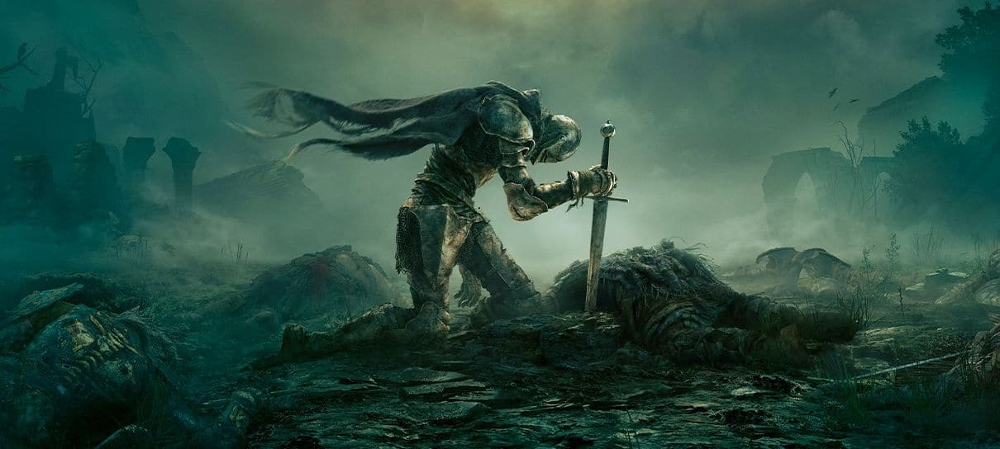

Últimos Anúncios e Lançamentos

Expansão de Elden Ring Anunciada!
25 de Novembro, 2025
Shadow of the Erdtree chegará em fevereiro, trazendo novos chefes e regiões para explorar.
A FromSoftware confirmou que esta será a maior expansão de todos os seus jogos, com foco em uma nova história do passado de The Lands Between.

Novo Trailer de GTA VI Bate Recordes
01 de Dezembro, 2025
O trailer mais esperado da década superou 100 milhões de visualizações em 24 horas.
O trailer revelou mais sobre os protagonistas Lucia e Jason, e confirmou Vice City como o cenário principal do jogo.

Horizon Call of the Mountain Chega ao PC
29 de Outubro, 2025
Exclusivo de PS VR2 chega ao PC em versão otimizada para realidade virtual e monitores.
A versão para PC inclui suporte a diversas resoluções e melhorias gráficas, sendo um marco para a franquia fora dos consoles PlayStation.